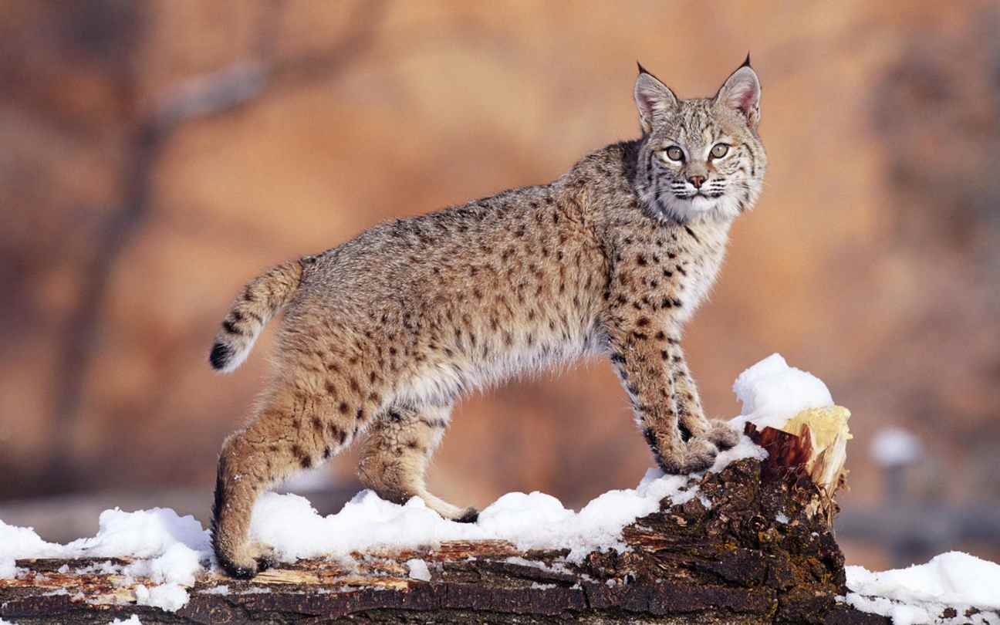
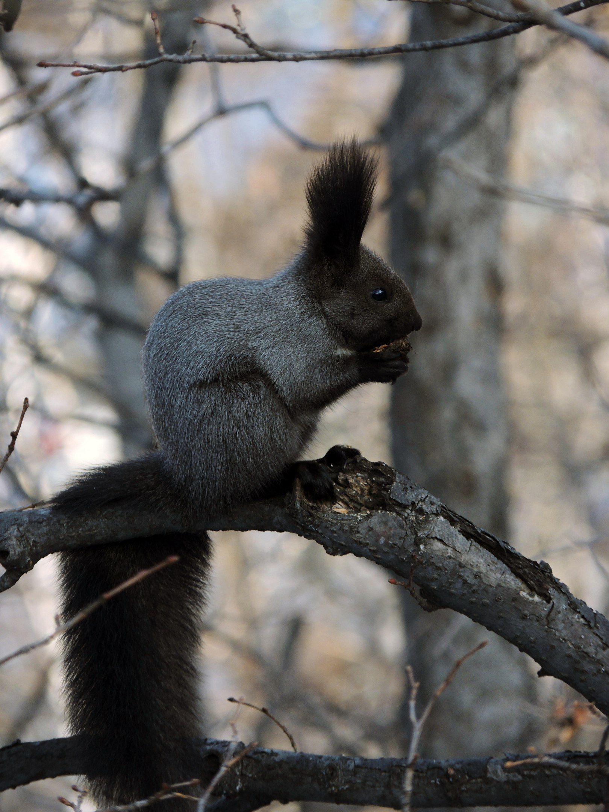

Животный мир Приморья - один из наиболее разнообразных на территории Российской Федерации. В целом общее число редких и нуждающихся в охране позвоночных и беспозвоночных животных в Приморском крае составляет 283 вида, из них 102 вида относятся к эндемикам.

Наиболее известными видами являются амурский тигр, дальневосточный леопард, аборигенная популяция пятнистого оленя, амурский горал, орлан белохвостый, черный гриф, утка мандаринка, дальневосточная черепаха (трионикс).
Сохранение амурского тигра остается в числе важнейших приоритетов региональной и общегосударственной экологической политики. Хотя непосредственной угрозы исчезновения этого вида сейчас нет, его будущее продолжает вызывать серьезную тревогу.
Леса на заселенной тиграми территории, кроме особо охраняемых природных территорий, как правило, уже пройдены рубками главного пользования, почти повсеместно сократилась численность копытных, что привело во многих районах к явному дисбалансу плотности населения основных видов потенциальных жертв хищника, и самого хищника.
Ситуация, сложившаяся к настоящему времени, как и прогнозируемая на обозримое будущее, заставляет усилить контроль за состоянием популяции амурского тигра, прежде всего за его численностью и возможными изменениями в пространственном распределении.

Результаты программы мониторинга амурского тигра, проводимые ежегодно, показывают, что численность популяции амурского тигра возможно снижается. Анализ тенденции с использованием данных по частоте встречаемости следов за последние 5 лет стабильно указывают на значительное снижение численности. Репродуктивность популяции тоже вызывает тревогу, так как все меньше и меньше данных, свидетельствующих о наличии тигрят, встречается на мониторинговых площадках.